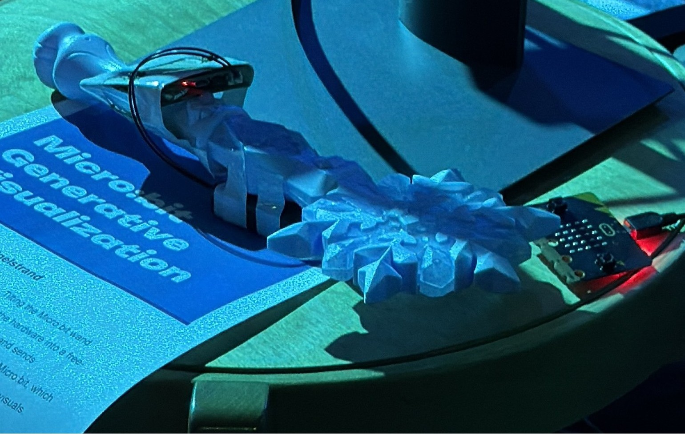
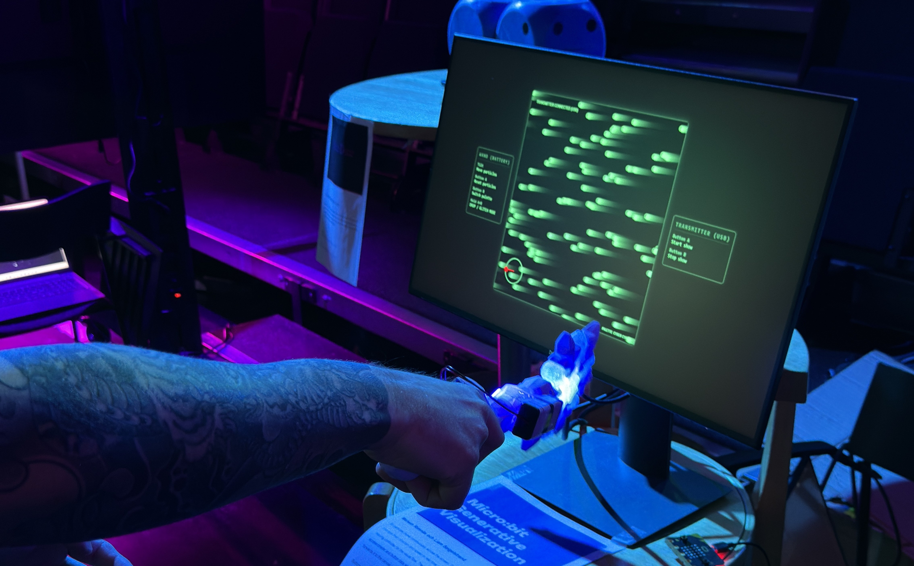
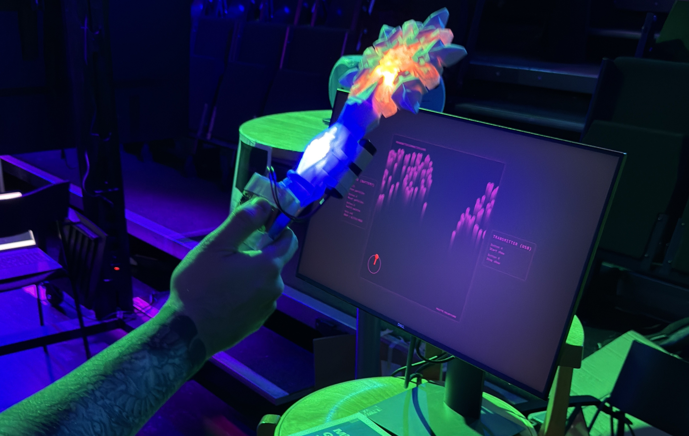
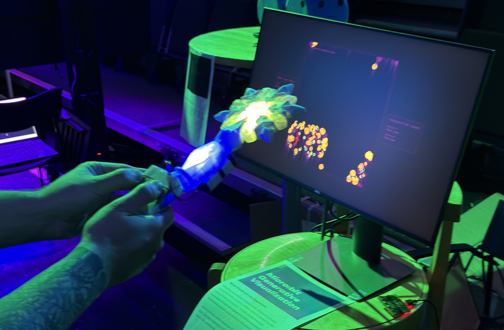
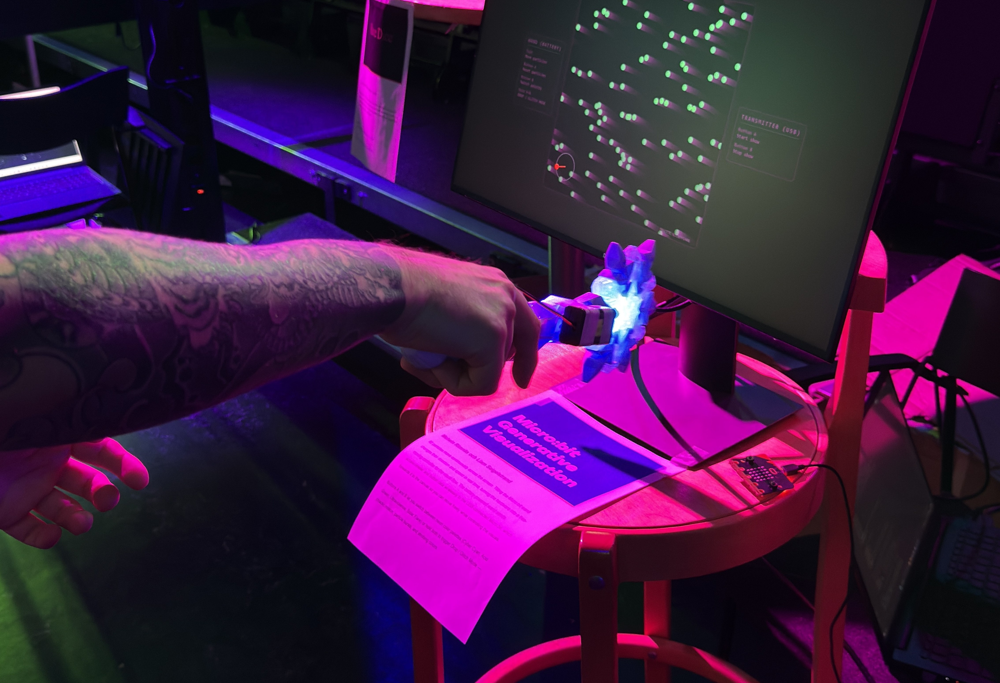

Liam Seigelstrand
Based in Stockholm, Liam Seigelstrand is a design and creative programming student at Södertörn University exploring interactive systems, physical computing, and generative visuals. Combining design methods with creative coding, his work focuses on building responsive, hands-on digital experiences.
-

wireless particle wand
-

Side Tilt
-

Upwards Tilt
-

Glitch Mode
-

Setup
demo
Wireless Particle Wand in action — micro:bit gesture control and real-time particle swarm.
Final Project For Algorave
Wireless Particle Wand
Wireless Particle Wand is an interactive visual instrument created by Liam Seigelstrand and Melwin Rimnäs, creative programming and design students at Södertörn University in Stockholm, for the Creative Programming (HT26) Algorave performance. Combining physical computing with generative visuals, the project pairs a handheld wand housing a micro:bit with a real-time JavaScript particle simulation. By waving and tilting the wand, the performer wirelessly steers a responsive particle swarm across the screen, with a Glitch Mode that injects sudden bursts of chaotic movement. As creators interested in interactive systems and live visuals, we built the wand to make generative art feel tactile and performative.